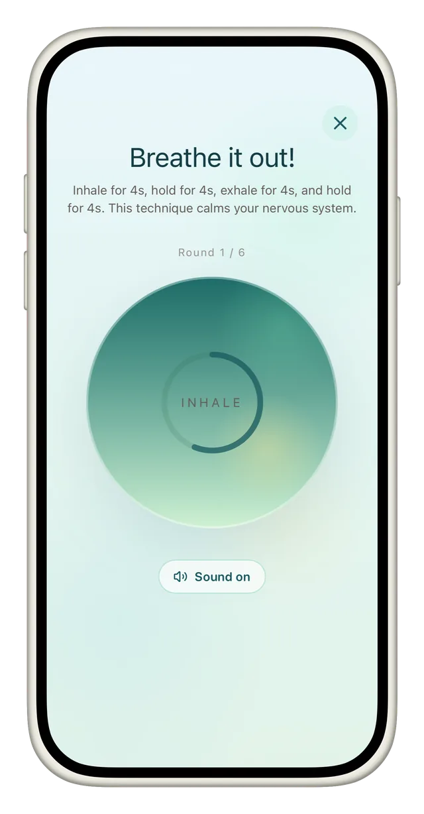
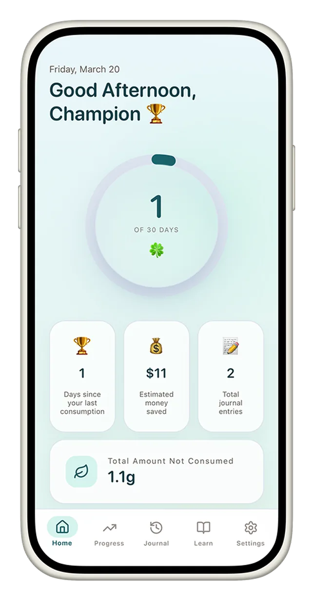
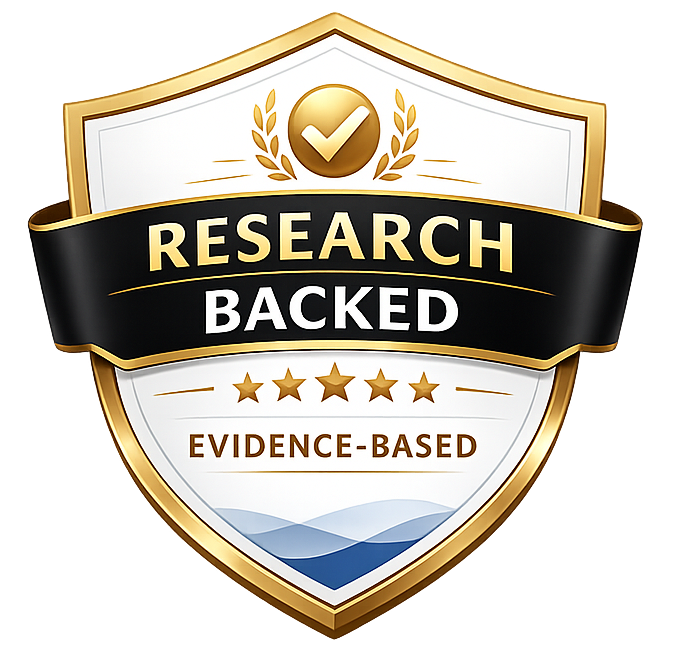

Cannabis sobriety tracker for iOS
Quit weed.


Quit weed.
Get your clarity✦ back.
Brain fog, low energy, cravings — that's not you, that's withdrawal. CannaClear shows you exactly what's happening day by day and guides you through it with calm structure instead of willpower.

3-day free trial · cancel anytime · from $2.50/month billed yearly
Science-backed insights
Private by default
Supportive and calm
0days weed-free


$0saved so far
